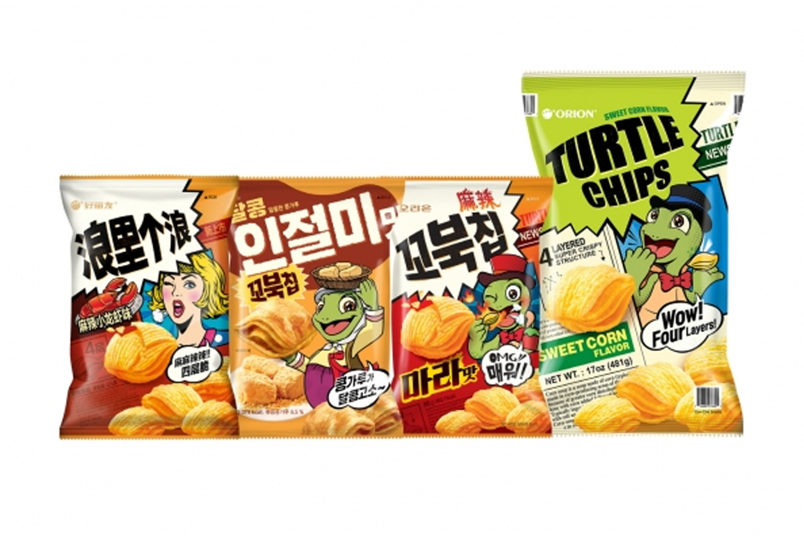

꼬북칩
오리온 꼬북칩 — 거북 등처럼 네 겹으로 구운 바삭한 옥수수 스낵.
꼬북칩은 오리온의 네 겹 바삭 스낵입니다. 감자칩이 아니라 옥수수 스낵에 가깝고, 콘소메·초코 등 맛이 있습니다.
부피가 커서 캐리어에 넣기 전에 압축·지퍼백을 권합니다. 편의점보다 마트 묶음이 저렴한 경우가 많습니다.
꼬북칩은 오리온의 네 겹 바삭 스낵입니다. 감자칩이 아니라 옥수수 스낵에 가깝고, 콘소메·초코 등 맛이 있습니다.
부피가 커서 캐리어에 넣기 전에 압축·지퍼백을 권합니다. 편의점보다 마트 묶음이 저렴한 경우가 많습니다.
사는 팁
구매 팁 초코 맛은 녹기 쉬우니 여름에는 콘소메 등 짭짤한 맛을 권합니다.